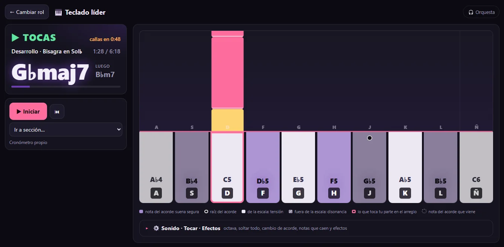
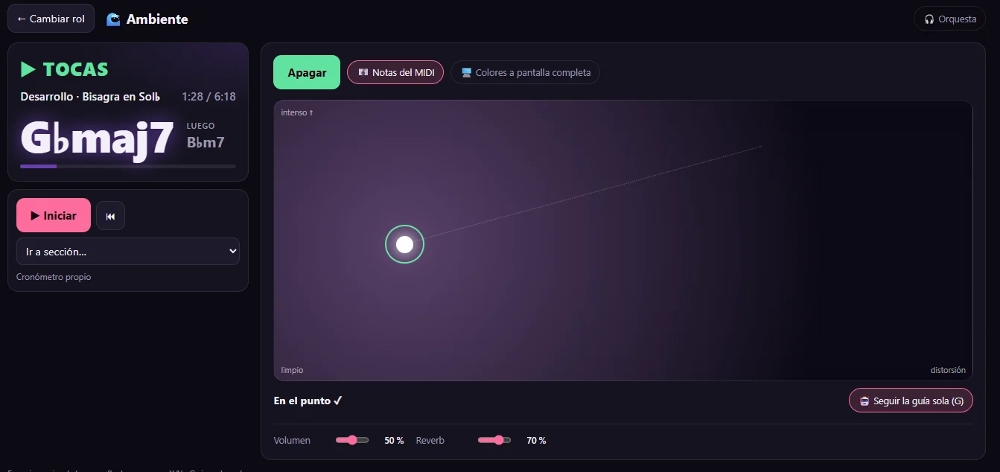

Tarea 3: Versión de concierto · Genesis v3
Parte 1 · Partitura y partes
Partitura general: Se encuentra directamente en la aplicación en forma de instrucciones en pantalla, específicamente como notas que caen (en los teclados) o un punto que seguir (en los ambientes)




Partes por rol, número de estaciones decisiones del interprete: La obra contempla como mínimo 7 interpretes (5 teclados distintos (dos en un registro más agudo, dos en uno más grave y un líder que hace la melodía anteriormente de la guitarra) y 2 ambiente (uno el cual es el laptop maestro)). En el caso de haber más interpretes existe la posibilidad de que haya múltiples teclados bajos (del 3 y 4).
La obra posee un segmento de improvisación en el cual cada parte es libre de tocar como quieran, con un solo limite que sería mantener el ritmo de la obra y no solo presionar teclas como loco, a su vez en el resto de los segmentos se incentiva que los interpretes agreguen un par de notas y jueguen con sus partituras, la obra esta programada para que las teclas disponibles no presenten una gran disonancia. Mas específicamente las instrucciones serian:
- Teclados: Jueguen con las notas cercanas y prueben añadirles arreglos a sus partes, pero tanto para el segmento de improvisación como en el resto, no rompan el ritmo de la canción.
- Ambientes: Son libres de moverse conforme lo sientan necesario, si prefieren dar mas espacio a teclados o quieren añadir más textura, recomiendo no irse a los extremos del pad.
Forma cerrada
| Bloque | Tiempo | Secciones | Qué pasa |
|---|---|---|---|
| Intro | 0:00–1:02 | Distorsión ambiente · Drone en Re♭ · Melodía y teclados · Distorsión · Pedal F | La obra abre lentamente, marcando su sonido ambiente hasta la aparición de los teclados que muestran las melodías principales de la obra. |
| Desarrollo | 1:02–2:01 | Notas largas · Crece · Limpio · Bisagra en Sol♭ · Muro · Teclados altos | La melodía principal empieza a salir y entrar en repetidas ocasiones, con distintos acompañamientos generando una acumulación de texturas distintas o un muro de sonido. |
| Fake outro | 2:01–2:31 | Medios · Dos líneas | El muro de sonido empieza a disminuir lentamente en lo que seria el final de la obra antes de ser modificada. |
| Espejo: Outro 2 y Desarrollo 2 | 2:31–4:00 | Dos líneas 2 · Medios 2 · Teclados altos · Muro · Bisagra · Limpio · Decrece · Notas largas | Antes de resolver en la Fake outro, la obra vuelve a subir ahora en una progresión espejo (del flujo de efectos más que de las notas que uno toca como tal) |
| Improvisación | 4:00–4:59 | 32 compases · B♭m7 ↔︎ G♭maj7 | Posterior al espejo y antes de llegar a lo que sería la intro espejo un segmento de improvisación para todos los intérpretes. |
| Intro 2 | 4:59–5:43 | Pedal F · Distorsión · Melodía y teclados | Posterior a la improvisación, la obra vuelve a su estructura inicial, en la que poco a poco van cayendo los teclados. |
| Desenlace | 5:43–6:18 | Suave · Resolución en Re♭ | El resto de los teclados vuelve para dar una pequeña resolución y concluir la obra |
Duración total verificada: 6:18 min
Comienzo, transiciones y final
Partida: El inicio tiene dos formas de darse dependiendo del formato que se utilice, al usar la pagina web, el comienzo será dado por Felipe Osorio con una cuenta regresiva, mientras que, si se utiliza el formato local conectado por red, los temporizadores empezaran a la vez.
Cambios de sección y final: Dados automáticamente por la aplicación, por lo tanto, no hay que coordinar nada.
Parte 2 · Sistema técnico Red
Laptops de la orquesta y sin internet: Hay dos versiones de la obra, uno en web y el otro como aplicación local, ambos funcionan sin conexión a internet, aunque el local si requiere red si es que se desea tener la opción de empezar todos a la vez.
Montaje, estado inicial
El montaje de la pagina web es sumamente rápido, requiere entrar a la pagina con el archivo de la obra, seleccionar el instrumento correspondiente y empezar a tocar. (Como mucho un ajuste de volumen puede llegar a ser necesario dependiendo del lugar donde se monte la obra).
Mientras que el montaje de la aplicación local requiere un paso extra y es que todos los laptops deben estar conectados a la red “oluc”, para posteriormente dentro de la misma aplicación conectarse al pc maestro, el cual iniciará la obra y controlará el ambiente (y de fondo los colores proyectados, por lo que debe conectarse a un proyector (en caso de que no haya simplemente no se mostrará))
Mapeo de control y nivel
| Rol | Control | Rango y efecto sonoro |
|---|---|---|
| Teclados | A S D F G H J K L Ñ / click / teclado MIDI u teclado externo | Con las teclas de un teclado o controlador externo uno controla que nota toca. |
| Teclados | ← → · Esc | Las flechas del teclado controlan la octava y la tecla esc sirve para detener todo el sonido. Ninguna de estas dos opciones es utilizada en la obra |
| Teclados | Distorsión · Brillo · Reverb · Volumen · Efectos automáticos | Estos parámetros uno los puede ajustar manualmente en la sección bajo el teclado en pantalla. Los efectos cambian automáticamente con el progreso de la obra por lo que no es necesario cambiarlos a mano. |
| Teclados | Cambio de acorde · Notas que caen | El cambio de acorde corresponde a una opción que controla la caída de las notas tocadas en el progreso de la obra, viene con un valor default el cual no es necesario ajustar. La opción nota que caen permite activar o desactivar estas instrucciones. |
| Ambientes y líder | Pad X/Y (X, Y) · Encender · Guía automática | Los ambientes se mueven con el mouse en un eje X que controla distorsión e Y que controla el volumen del sonido. Tienen un botón de encender para iniciar el sonido del pad continuamente y la guía automática. |
| Maestro/líder | ▶ Iniciar / ⏸ · Ir a sección · 👥 Sala · ventana de luces | El laptop maestro de la obra tiene la capacidad de crear una sala a la cual se conecte el resto para iniciar la obra a la vez. También puede abrir una ventana con la que proyectar color que se ve afectado conforme avanza la obra. |
Plan de contingencia
| Falla | Qué se hace |
|---|---|
| Se cuelga una estación o falla una interfaz | En el caso de que uno de los teclados o ambiente fallen, tienen la opción de volver a abrir la pagina o aplicación y entrar cuando coincida en el caso de la página, ya que en el caso de la aplicación si uno vuelve a conectarse a la sala, empieza exactamente donde va el resto de la orquesta. |
| Falla el laptop maestro | Seria ideal que no fallara, pero es posible diseñar una conexión doble, por lo cual, si el maestro falla el resto de la orquesta, siga tocando y el maestro pueda conectarse al progreso de estos. |
| Se cae la red | El programa funciona perfectamente sin la opción de conexión a red, he incluso si se cae la red una vez comenzada la obra, esta sigue sin problema. |
Parte 3 · Registro de decisiones
| Problema | Decisión | Razón |
|---|---|---|
| Tarea 1: falta de coordinación | Ajustar la “libertad” de cada instrumento, eliminar las partes que no me convencieron (guitarra y batería) y añadir conexión por red. | Tras el feedback de la primera practica de la obra decidí ir de cabeza por la opción de la libertad de tocar (no tener que tocar perfectamente algo), por lo cual tome esta decisión para camuflar cualquier disonancia que sea producto de esto. También la conexión por red elimina la necesidad de una cuenta regresiva para poder empezar a la vez |
| Tarea 1: Notación y dirección abiertas: cronómetro, partitura visual, acordes generados como en “In C”, posible director. | Se añadió un temporizador en pantalla, agregó las notas cayendo y se rechazó la idea de acordes pre-hechos como en “In C” y de un posible director | Se decidió mantener lo justo y necesario en pantalla para que los intérpretes pudieran concentrarse en lo que están tocando y el resto de la orquesta, a su vez se rechazó la idea de casi que automatizar todo, porque tampoco es muy entretenido cuando no es en un contexto similar al de “In C” y el director no es necesario, las instrucciones son bastante intuitivas y claras |
| Tarea 1: Instrumentación e interfaces: guitarra, batería, Gametrak o teclados externos. | Se eliminaron completamente la opción de guitarra o batería, o de algún hardware que permitiera controlar la obra, aparte de un teclado externo. | Esto más que nada a favor del tiempo, en una futura interpretación me encantaría añadir algo así. |
| Guitarra → Teclado líder; sin batería; Square Woof en todos los teclados. | Se eliminó la opción de guitarra, batería y estableció como default el sonido sintetizado con ayuda de FL Studios | Los sonidos de batería y guitarra no me terminaron de convencer nunca, en mi opinión no sonaban bien, a esto se le agrega el feedback recibido en el ensayo que oriento la obra a un Angulo más ambiental, que no requiere de estos instrumentos. Y por el mismo feedback y decisión propia se estableció este sonido como el default. |
| Duración de la obra ≈ 2:55 min | Se extendió la obra a 6:18 min | Debido a la necesidad de tocar un poco más para la puesta en escena se decidió extender la obra sin perjudicar el discurso de esta (que sigue siendo el “génesis” de algo, el cual no es tan lineal, que da un par de pasos hacia adelante y a veces pareciera que retrocede, pero finalmente igual llega a su destino). |
| Inicio en red local con maestro y cuenta regresiva. | Se añadió el sistema de red. | Esto es producto del ensayo, ya que tuvimos que coordinar con una cuenta regresiva. Pensando en una puesta en escena con los nervios y posible ruido de fondo, esto puede complicarse, por lo cual decidí añadir la conexión para que todos los laptops empiecen a la vez. |
Parte 4 · Nota de programa, ficha técnica y documentación
Genesis OLUC · Felipe Osorio, sobre «genesis» de Robin Callaway · 2026 · 6:18 · 7-9 interpretes
Esta obra es una reinterpretación de “genesis” del artista Robin Callaway, la cual normalmente se cataloga bajo los géneros “Noise rock” y “Shoegaze”. De por si esta canción es una obra más experimental que una canción de “Pop”, por lo cual me pareció perfecta para establecer un puente entre una obra interpretativa electroacústica (comúnmente asociadas con las orquestas de laptops) y una canción de una estructura más “popular”. Por ello es que la obra se plantea como una especie de respuesta a la imagen abstracta y erudita comúnmente asociada con estos espacios, que busca demostrar que una orquesta de laptop no es solo eso, un espacio cerrado al público general. Esto sin perder el mensaje/simbolismo que originalmente tiene la canción ni la capacidad de expresarlo (como una obra de orquesta de laptops). El origen de algo nuevo, un proceso que no es tan lineal como uno podría pensar y que a ratos desorienta, pero que con el paso del tiempo se desdobla para poder observarlo en su totalidad.
Ficha técnica
| Campo | Valor |
|---|---|
| Estaciones y roles | 7 – 9 estaciones, todos intérpretes, cada uno con sus respectivos laptops y equipos de sonido. Maestro – Ambiente Teclados 1, 2, 3, 4 y lider (Con extra 3 y 4 si son 9) Ambiente brillo |
| Software por estación | Genesis V3 app, para Mac. O alternativamente un navegador para abrir la versión web de la app |
| Canales de audio por estación | Todos los laptops tienen una salida de audio a estéreo que conecta a sus parlantes |
| Interfaces | Teclados del laptop y trackpad. Opcionales: Teclado externo (Teclados) y Mouse (Ambientes) |
| Red · proyección visual | Router propio de la orquesta al cual se conectan los laptops y conexión visual a un proyector para el laptop maestro. |
| Disposición en escena (plano) | El laptop maestro (ambiente) al fondo, con los teclados graves a su lado (3 - 4, o 34 - 34), seguido de los teclados 1 y 2 con el teclado líder al centro y finalmente el ambiente brillo delante. (formando una especie de circulo con un punto en el centro) |
| Montaje · duración | El montaje estimado es de menos de 5 min si ya están listos los laptops en sus estaciones. Y la obra dura 6:18 min. |
Carpeta de la obra (descarga)
- App de escritorio Genesis v3 (Mac y Windows): release v3.0.0 en GitHub
- Carpeta completa de la obra (versión web, sonidos, código de la app), lista para copiar a las laptops OLUC: Genesis_OLUC en el repositorio de la orquesta
Declaración de uso de IA
Herramienta: Claude (Anthropic, Claude Opus 5.5), en la app de Claude con acceso a mi repositorio, a GitHub Desktop en mi computador y al navegador integrado (para publicar las descargas). La responsabilidad sobre lo entregado es mía.
| Propósito | Prompt relevante (textual) |
|---|---|
| Programar la versión 2: orquesta, piano en el teclado y notas que caen. | «Nececito que el piano completo pueda ser tocado en las teclas del teclado […] quiero que se vea como caen las notas y apenas toquen el teclado haya que tocar, como en osu!mania» |
| Arreglo y partes: reparto del arpegio y teclado líder. | «Distribuye las notas de teclado 1 con el teclado 2, (el 1 tiene demasiado que hacer y el 2 no tanto) […] usa solo la fila de la “a”» |
| Forma: alargar la obra, espejo, improvisación y transiciones de efectos. | «quiero que dupliques los presets de efectos a la inversa y empujes el desenlace “real” al final […] dejes un segmento de 1 min de improvisación» |
| Versión 3 y app de escritorio en red local; hub de versiones. | «Quiero que tal cual como ésta Genesis v2, hagamos una versión 3 […] quiero que cuando el pc maestro […] le de a iniciar a la obra, todos empiecen a la vez.» |
| Interfaz de la v3: ajustes plegables, sin elementos de juego ni menciones a instrumentos que se sacaron. | «Quiero que los apartados de 1) sonido 2)tocar 3)efectos, queden por debajo de los instrumentos y que por default esten ocultos en una ventana expandible» |
| Luces: el maestro toca el Ambiente y proyecta una ventana de luces. | «El pc maestro será atado al ambiente y tiene que tener la capacidad de proyectar en una ventana aparte los cambios de luz de la obra.» |
| Armar y publicar las apps (release v3.0.0). | «Te doy acceso a mi buscador publica las apps» |
| Documentación: estructura de este documento y esta declaración. | «Quiero que en base a la info en el documento de la T3, y esta pauta me generes una estructura con tablas que yo llenar de información y en la cual escribir» «Actualiza una declaración de uso de IA para el documento» |
| Publicar este documento como entrada de mi blog (en mi blog y en mi carpeta del repositorio de la orquesta), con los enlaces de descarga. | «En base a este documento crea un post en mi blog (en el repo de la orquesta y en el mio). Añade en el segmento “carpeta de la obra (descarga)”, un enlace al release para descargar la app de genesis y un enlace a https://github.com/OrquestaLaptopsUC/OrquestaLaptopsUC.github.io/tree/main/2026/portafolios/Felipe_Osorio/Genesis_OLUC Y en la declaracion de uso de ia incluye esta accion.» |
Sin IA: Todo texto a excepción de la creación de las tablas y la declaración de uso de IA (le pedí que extrajera directamente del chat la información.